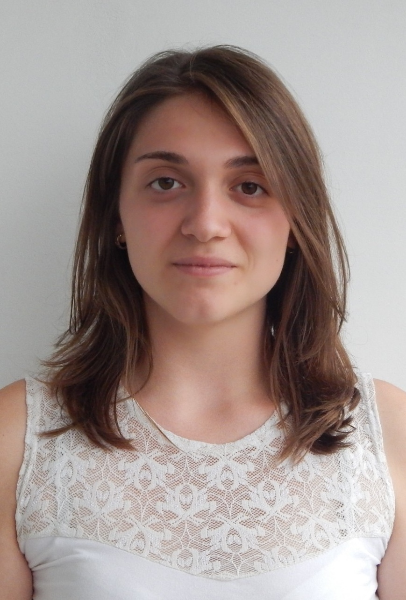

About Me
Hello! I'm Antonia, an enthusiast for web development with a background in marketing and a flair for design. My journey into the world of coding began two years ago, and since then, I've immersed myself in various online courses and bootcamps to hone my skills, including: completing the Code First Girls Degree 16-week Bootcamp in Software Engineering; Front-end development through an 8-week course; C# programming through CS50 Harvard. I'm currently teaching myself Photoshop to create website designs, combining my technical skills with a keen eye for aesthetics. My goal is to seamlessly blend functionality and creativity in the digital realm. Currently, I'm enrolled in the Front-end Development Bootcamp sponsored by edX, aiming to further my skillset and transition into a role in UX design. My diverse background in marketing, coding, and design equips me to bring a unique perspective to every project. I thrive on challenges and am excited about the ever-evolving landscape of web development. Let's build something incredible together!